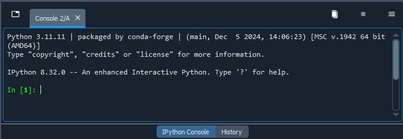

2: Setup
Installation isn't strictly necessary for working with Kaitai, but is required for working with Construct.
2.1 Kaitai IDE
For Kaitai, the Web IDE (Integrated Development Environment) is the simplest way to get started, and is all that is necessary for the majority of this lesson. If you're already familiar with the language you can use the Web IDE to jump straight in to describing your data format. If you're not familiar, it's recommended to read through the existing documentation. The instructions in section 4. Defining the Structure in Kaitai reference the documentation enough to describe one file type, but the actual documentation provides a much more complete description of Kaitai's syntax and its available commands. Advanced users may wish to install ksc, the kaitai-struct-compiler, and/or ksv, the kaitai-struct-visualizer, directly onto their own machine. Instructions to do so are included in the appendix section.
2.2 Python Setup
In order to use Construct, it is necessary to have Python installed on your machine. If that is already the case for you and you are already familiar with an IDE of your choice, this section can be skipped.
There are numerous IDEs with which one can use for programming in Python: Spyder, Anaconda, Visual Studio Code, and Pycharm are popular choices, just to name a few. For this lesson, it is recommended to install and familiarize yourself with the Spyder environment, which can be downloaded and installed from here. Spyder is an open-source program which was built in Python, for Python, specifically for use in data science.
By following the link, you should have the option to download the IDE for your operating system (Windows, macOS, and Linux are supported), at which point you can follow the guided installation. The IDE should open after the installation is complete, at which point it is recommended to follow along with the tour for a quick overview of the IDE.
2.3 Construct Setup
After installing the Python IDE of your choice, open or navigate to the console. In Spyder, the console is found as the window on the bottom right (by default), and should resemble the below image.

If you're having trouble finding the console, or have removed the window by accident (or on purpose and are unsure how to return it), it should be possible to turn it back on by navigating to View > Panes > and checking the box next to IPython Console. Alternatively on Windows, you can also type CTRL+SHIFT+I to open or close the console window.
Construct doesn't have any hard dependencies, but all supported modules can be installed as well with a single command. The basic version of Construct is enough for this lesson. To install it, you should only need to type or copy the following into the console and hit enter:
pip install construct
Advanced users can refer to the appendix for further instructions.